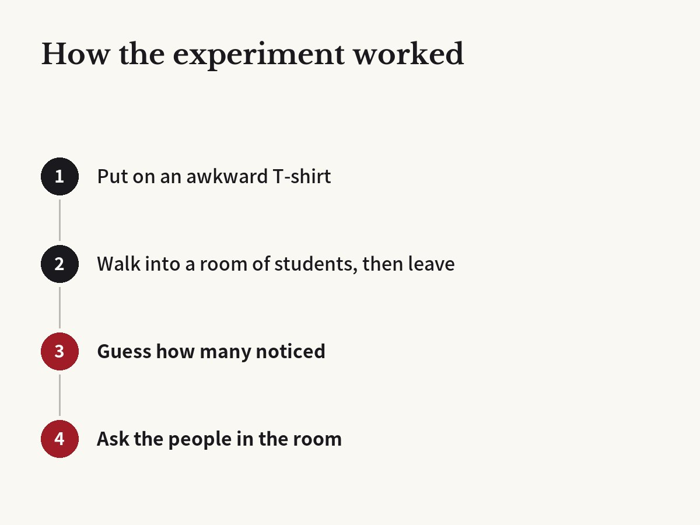

Wore an embarrassing shirt? You'd guess half the room noticed. Fewer than 1 in 4 did
Gilovich, Medvec & Savitsky · Journal of Personality and Social Psychology, 2000

01The result
In a study published in the Journal of Personality and Social Psychology in 2000, Thomas Gilovich and his team at Cornell University asked students to wear an embarrassing T-shirt. It had the big face of a singer who was not popular with students at the time.
Each student walked into a room where other students were filling in a form, then left a moment later. Then they guessed how many people in the room had noticed the shirt.
They guessed about half. When the researchers asked the people in the room, fewer than 1 in 4 remembered the shirt. The guess was about twice the real number.

02Why it happens
The researchers called this the spotlight effect. It feels as if a stage light is on you, so you think people notice you far more than they do.
The reason is simple. We can only see the world through our own eyes. When you wear an embarrassing shirt, you think about it all day. That feeling is so strong that you assume others notice it just as much.
The researchers explain it like this. We start from our own feelings, then adjust for the fact that others care less. But we never adjust enough, so our guess stays too high.
03Not just bad shirts
In another test, students wore a cool shirt they picked themselves. Again, they thought many people would notice it.
The result was the same. Far fewer people noticed than they guessed. We overrate other people's attention not only when we feel silly, but also when we want to look good.
The team also looked at group discussions. People thought their slip-ups and their best comments stood out to others more than they really did.
04Related research
The same researchers found a similar mistake in other studies. People think their lies or their disgust at a bad taste show clearly on their faces, but others notice much less. This is called the illusion of transparency.
In a later study, people who made a mistake guessed how harshly others would judge them. Again, the real judgments were kinder than they expected.
05We overrate our ups and downs too
In 2002, Gilovich's team reported a related illusion in the Journal of Experimental Social Psychology. This time it was about how our appearance changes from day to day.
People thought that when their hair, clothes or energy were different from usual, others would notice the change. Others actually noticed less. The gap between a good day and a bad day looked big only to the person living it.
The same was true for people who felt their performance in a game went up and down. The people they played with did not see their skill changing nearly as much from day to day.
06What it means
Think of a bad hair day, a stain on your shirt, or a time you tripped over your words in a meeting. It bothered you all day, but far fewer people remember it than you think.
Everyone else is busy with their own day. We all see our own shirt and our own mistakes as bigger than anyone else's.
If a small mistake is holding you back from saying or doing something, this study might give you a little courage.
07Limitations
The tests used college students, small rooms with usually four or five people, and short visits. Results could be different in a big lecture hall or an office where people spend all day together.
It does not mean nobody notices. Close to 1 in 4 people did. Others pay less attention than we fear, not zero attention.
Corrections
- In 'Limitations', we corrected the room size from 'five or six people' to 'usually four or five people'. In the paper's first study, rooms held 2 to 6 observers, mostly 4 or 5. We also changed the illusion-of-transparency example from 'nerves or lies' to 'lies or disgust at a bad taste', which is what those experiments actually tested.
Original paper
- Gilovich, Medvec & Savitsky (2000), Journal of Personality and Social Psychology, doi:10.1037/0022-3514.78.2.211
- doi.org/10.1037/0022-3514.78.2.211